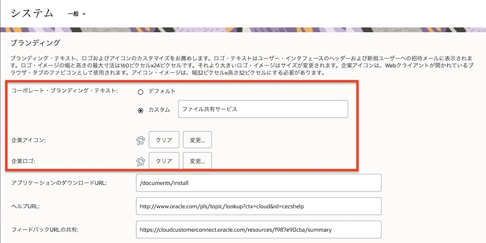
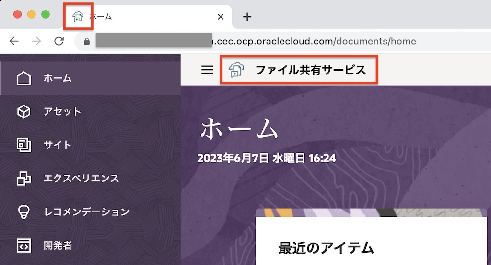
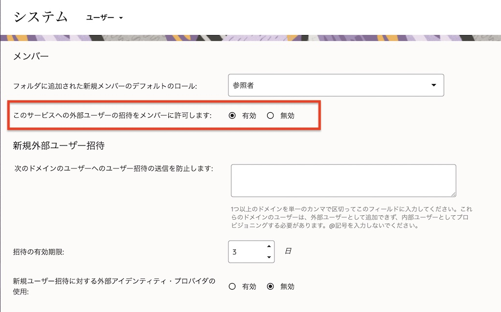

この文書はOCMインスタンス作成後、利用者への周知・案内をする前にサービス管理者が必ず作業・確認すべき管理設定を紹介します。
【お知らせ】
この文書は、2023年6月時点での最新バージョン(23.5.2)を元に作成されてます。
チュートリアル内の画面ショットについては、現在のコンソール画面と異なっている場合があります。
前提条件
1. インスタンス共通の管理設定ガイド
OCMインスタンスを作成したら、必ず作業・確認すべき管理設定を紹介します
1.1 ブランディング
OCMのWebユーザーインタフェースのロゴやfavicon、ロゴ右隣のブランディング・テキストを変更できます。
ブランディングテキストは、組織内におけるOCMインスタンスの名称（呼称）を、短くわかりやすい言葉で表現する際に利用します
-
サービス管理者権限が付与されたユーザーでOCMインスタンスにサインインします
-
左ナビゲーションメニューの ADMINISTRATION:システム→一般を選択します
-
ブランディングのコーポレート・ブランディング・テキストでカスタムを選択し、表示するテキストを入力します
【TIPS】
ブランディングテキストを非表示としたい場合は、カスタムを選択し、入力エリアを空白のままとします -
企業アイコンで変更をクリックし、表示したいfaviconを設定します
-
企業ロゴで変更をクリックし、表示したいロゴ画像を設定します 
-
画面を下にスクロールし、保存をクリックします
-
ロゴとブランディングテキストが変更されます 
【関連ドキュメント】
Apply Custom Branding and URLs (※日本語翻訳)
1.2 通知
ユーザーへの通知メールの有効/無効を設定します。デフォルトは全て「有効」です。
なお、通知メールのデザインや本文のカスタマイズはできませんが、1.1ブランディングで設定した企業ロゴおよびブランディングテキストが通知メールに設定されます
-
左ナビゲーションメニューの ADMINISTRATION:システム→一般を選択します
-
通知の有効・無効を選択します。それぞれの通知設定は以下の通りです
- ようこそ電子メール通知: ユーザーがOCMインスタンスに追加された時に電子メールが通知されます。通知メールはユーザーに割り当てられるアプリケーションロールによってカスタマイズされます
- タクソノミ電子メール通知: タクソノミのプロモート、公開、削除の時に電子メールが通知されます。通知メールはタクソノミが割り当てられているリポジトリにアクセスできるユーザーに対して送信されます
- 他のすべての電子メール通知: 会話機能でフラグが設定されたとき、フォルダにメンバー追加されたとき、など上記以外の他のイベント発生時に電子メールが通知されます
-
画面を下にスクロールし、保存をクリックします
【関連ドキュメント】
Enable or Disable Email Notifications (※日本語翻訳)
1.3 タイムゾーンおよび言語
webブラウザのロケール設定を使用できない場合のフォールバック設定を指定します（通常はWebブラウザのロケール設定にあわせて、タイムゾーン、言語、日付書式が選択されます）
-
左ナビゲーションメニューの ADMINISTRATION:システム→一般を選択します
-
タイムゾーンおよび言語の「タイムゾーン」「言語」「日付書式ロケール」「開始曜日」を選択します

-
画面を下にスクロールし、保存をクリックします
【関連ドキュメント】
Set the Default Locale Settings (※日本語翻訳)
1.4 ファイルとアセットの制限
ウィルス・スキャン、最大アップロードおよび同期ファイルサイズ、ファイルタイプ（拡張子）を設定します。
【重要:ウィルススキャンの無効化について】
ウィルススキャンはデフォルトでスキャンできないファイルのアップロードを「許可しない」です。スキャンできないファイルのアップロードを「許可する」に変更できますが、そのリスクや影響範囲をご理解いただき、自己責任の上で設定変更をお願いします
【重要:ファイル・サイズについて】
ファイルサイズのデフォルト「2GB」です。なお、ここで設定したファイルサイズは、(1)WebブラウザからOCMのフォルダにアップロードされるファイル、(2)クライアント端末にインストールされたデスクトップアプリケーションからOCMのフォルダにアップロード（同期）されるファイル、(3)WebブラウザからOCMのリポジトリにアップロードされる画像ファイルや動画ファイル、などすべての登録ファイルに適用されます
-
左ナビゲーションメニューの ADMINISTRATION:システム→一般を選択します
-
ファイルとアセットの制限を選択します
【メモ】
上記設定の場合、「スキャンできないファイルのアップロードは許可しない」「アップロード可能な最大ファイルサイズは4096MB(4GB)」「ファイル拡張子がexeとswfのファイルアップロードを拒否」となります -
画面を下にスクロールし、保存をクリックします
【関連ドキュメント】
Restrict File and Asset Types and Sizes (※日本語翻訳)
1.5 請求
OCMインスタンス内に登録可能なアセット数、ファイル数、及びストレージ容量を設定します。デフォルトは制限なし（0）です。
制限を適用せず、管理警告の送信のみ設定することもできます。なお、管理警告は制限値の90%に到達した場合に、サービス管理者に対してメール通知されます
【重要】
制限値の適用を有効に設定した状態で登録数やストレージ容量、転送量が制限値を超過した場合は、超過状態が解除されるまで、ファイルやアセットの新規登録ができません（エラーになります）
データ転送制限の制限値の適用を有効にした状態で制限値を超過した場合、OCMからのファイル表示やダウンロードだけでなく、サイト訪問者によるOCMのサイト機能で作成・公開したWebサイトの表示・閲覧もエラーとなります
-
左ナビゲーションメニューの ADMINISTRATION:システム→請求を選択します
-
リソース制限より「アセット制限」「ファイル制限」「ストレージ制限」の制限値を設定し、「制限値の適用」を有効に設定します。制限値を設定しない場合は、値に0(ゼロ)を設定します
-
制限値を適用せず、管理者への管理警告の送信のみとする場合は、「制限値の適用」を無効に設定し、「制限に達したときに管理警告を送信」を有効に設定します
-
データ転送制限についても、リソース制限と同様に設定します。下のスクリーンショットの場合、制限値を10GBに、制限値の適用を有効に設定しました
【関連ドキュメント】
Configure Billing Settings (※日本語翻訳)
2. ファイル共有機能の管理設定ガイド
OCMインスタンスのファイル共有機能（ドキュメント機能）を利用する場合に、必ず作業・確認すべき管理設定を紹介します
2.1 ユーザー
2.1.1 デフォルトロールの設定
フォルダにメンバーを追加する際のデフォルトで選択されるロールを設定します。
デフォルトは「コントリビュータ」ですが、「参照者」や「ダウンロード実行者」の権限に変更することを推奨します（誤操作などにより追加予定の無いユーザーをメンバー追加してしまった際の影響範囲を必要最小限に抑えられるため）
【メモ】
メンバー追加時のロールは「マネージャ」「コントリビュータ」「ダウンロード実行者」「参照者」の4つのロールを選択できます。
それぞれのロールで利用できる操作は、Set the Default Resource Role for New Folder Members (※日本語翻訳)をご確認ください
ここではデフォルトロールを「参照者」に変更する手順を紹介します
-
左ナビゲーションメニューの ADMINISTRATION:システム→ユーザーを選択します
-
フォルダに追加された新規メンバーのデフォルトのロールで、参照者を選択します
-
画面を下にスクロールし、保存をクリックします
-
フォルダを選択し、メンバー→メンバーの追加を選択します。「これらのユーザーは何を実行できますか。」の権限で参照者がデフォルト設定されることを確認します
【関連ドキュメント】
Set the Default Resource Role for New Folder Members (※日本語翻訳)
2.1.2 外部ユーザーの設定
OCMインスタンスで外部ユーザー(External User)によるフォルダ・ファイルの利用を有効にする場合、この設定を変更します。
外部ユーザーの詳細は、External Users (※日本語翻訳) をご確認ください
ここでは外部ユーザーのフォルダ招待を有効に変更します
-
左ナビゲーションメニューの ADMINISTRATION:システム→ユーザーを選択します
-
このサービスへの外部ユーザーの招待をメンバーに許可します:で有効を選択します 
-
必要に応じて、「新規外部ユーザー招待」の項目を入力・設定します(オプション作業)
-
画面を下にスクロールし、保存をクリックします
-
フォルダを選択し、「外部ユーザーにフォルダ・アクセスおよびメンバーシップを許可します」が有効になっていることを確認し、メンバー→メンバーの追加を選択します。追加する外部ユーザーのユーザーIDの一部を入力しても選択候補が表示されないことを確認します
【参考】
外部ユーザーを招待するには、完全なメールアドレス(例:white.smith@example.com)を入力します。詳細は外部ユーザー（Oracle Content Management のファイル共有機能を利用しよう）をご確認ください
【関連ドキュメント】
Enable or Disable External Users (※日本語翻訳)
2.2 ドキュメント
2.2.1 ユーザー割当て制限
OCMインスタンスのファイル共有機能（ドキュメント機能）の利用ユーザーに割り当てるデフォルトの容量、ごみ箱での最大保持期間、最大バージョン数などを設定します。
ここで設定した値は、登録ファイル（アセット）数やストレージ使用量など月々のOCMのサービス利用料金に関係するため、事前に利用頻度や条件、ユースケースなどを検討した上で値を決定することを推奨します
ここでは、利用ユーザーに割り当てるデフォルト容量を10GB、ごみ箱での最大保持期間を30日、無制限バージョンを無効（最大最大バージョン数の制限あり）、最大バージョン数を10、自動削除された古いバージョンを完全削除する（ごみ箱に移動しない）、に設定する手順を紹介します
-
左ナビゲーションメニューの ADMINISTRATION:システム→ドキュメントを選択します
-
ユーザー割当て制限で以下の通りに設定します
- ユーザーごとのデフォルトの割当て制限: 10
- ファイルおよびフォルダをごみ箱に保持する最大日数: 30
- 無制限バージョンを許可: 無効
- ファイル当たりのバージョンの最大数: 10
- クリアされたリビジョンを完全に削除します: 有効
-
画面を下にスクロールし、保存をクリックします
【関連ドキュメント】
Set User Quotas and Manage Storage Space (※日本語翻訳)
2.2.2 リンク
パブリックリンク機能をどのようにユーザーに利用させるのか？を設定します。
ここでは代表的なパブリックリンク機能の管理設定を4パターン紹介します。
- (1)社内←→社外の双方向でのファイル受け渡しで利用（双方向のファイル送受信）
- (2)社内→社外へのファイル送付でのみ利用（片方向のファイル送信）
- (3)社内のファイル共有でのみパブリックリンクを使う
- (4)パブリックリンクは利用しない
(1)社内←→社外の双方向でのファイル受け渡しで利用（双方向のファイル送受信）
お客様や取引先、パートナーなど、OCMの登録ユーザーではない社外ユーザーとファイルの送受信でパブリックリンクを利用する場合は以下の設定をします
-
左ナビゲーションメニューの ADMINISTRATION:システム→ドキュメントを選択します
-
リンクで以下の通りに設定します
- ファイルおよびフォルダへのパブリック・リンクを許可: 有効
- デフォルト共有リンク・タイプ: メンバーのみ
- アクセス・オプション: すべてのユーザー
- パブリック・リンクの作成時にユーザーに警告を表示: 有効
- パブリック・リンクに使用可能な最大ロール: コントリビュータ
- 新規パブリック・リンクのデフォルト・ロール: 参照者
- すべてのパブリック・リンクに有効期限を強制: 有効
- 最大有効期限の設定: 30
-
画面を下にスクロールし、保存をクリックします
【Memo】
アクセスオプションを「すべてのユーザー」に設定すると、OCMの登録ユーザーでなくてもパブリックリンク経由でファイル・フォルダにアクセスできます
パブリック・リンクに使用可能な最大ロールを「コントリビュータ」に設定すると、更新権限付きのパブリックリンクが作成できます
パブリックリンクには有効期限を強制設定することを推奨します。ここでは「30日」に設定します
(2)社内→社外へのファイル送付でのみ利用（片方向のファイル送信）
お客様や取引先、パートナーなど、OCMの登録ユーザーではない社外ユーザーにファイルの送信でパブリックリンクを利用する場合は以下の設定をします
-
リンクで以下の通りに設定します
- ファイルおよびフォルダへのパブリック・リンクを許可: 有効
- デフォルト共有リンク・タイプ: メンバーのみ
- アクセス・オプション: すべてのユーザー
- パブリック・リンクの作成時にユーザーに警告を表示: 有効
- パブリック・リンクに使用可能な最大ロール: ダウンロード実行者
- 新規パブリック・リンクのデフォルト・ロール: 参照者
- すべてのパブリック・リンクに有効期限を強制: 有効
- 最大有効期限の設定: 10
-
画面を下にスクロールし、保存をクリックします
【Memo】
パブリック・リンクに使用可能な最大ロールを「ダウンロード実行者」に設定すると、閲覧及びダウンロードが可能なパブリックリンクが作成できます
パブリックリンクには有効期限を強制設定することを推奨します。ここでは「10日」に設定します
（3）社内のファイル共有でのみパブリックリンクを使う
お客様や取引先、パートナーなどOCMの登録ユーザーではない社外ユーザーとのファイル共有でパブリックリンクを利用せず、拠点や組織を横断した社内のファイル共有でのみパブリックリンクを利用する場合は以下の設定をします
-
リンクで以下の通りに設定します
- ファイルおよびフォルダへのパブリック・リンクを許可: 有効
- デフォルト共有リンク・タイプ: メンバーのみ
- アクセス・オプション: すべての登録済ユーザー
- パブリック・リンクの作成時にユーザーに警告を表示: 有効
- パブリック・リンクに使用可能な最大ロール: コントリビュータ
- 新規パブリック・リンクのデフォルト・ロール: 参照者
- すべてのパブリック・リンクに有効期限を強制: 無効
-
画面を下にスクロールし、保存をクリックします
【Memo】
アクセス・オプションで「すべての登録済ユーザー」に設定すると、OCMの登録ユーザーのみパブリックリンクを送信できます。OCMの登録ユーザーでない社外ユーザーにパブリックリンクを送信しても、そのリソース（ファイルやフォルダ）にアクセスできません
必要に応じてパブリックリンクの有効期限を設定します
（4）パブリックリンクは利用しない
パブリックリンクの利用を禁止する場合は、以下の設定をします
-
リンクで以下の通りに設定します
- ファイルおよびフォルダへのパブリック・リンクを許可: 無効
-
画面を下にスクロールし、保存をクリックします
【Memo】
ファイルおよびフォルダへのパブリック・リンクを許可を「無効」に設定すると、フォルダ・ファイルの「リンクの共有」メニューを選択してもパブリックリンクは作成できません（メンバーリンクのみ取得できます）
その他管理設定は設定不要です
【関連ドキュメント】
Set Default Link Behavior (※日本語翻訳)
以上でこのチュートリアルは終了です。